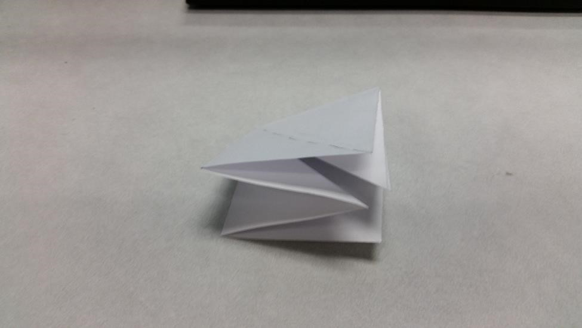

Welcome to Birdigami! If you are completely new to the world
of origami, here is a starting tutorial to help you along!
The basis for making various origami birds is the bird base. On this site,
You will need this base to make the origami flapping bird and the origami crane.
First, with a square piece of paper, fold the paper in half lengthwise and
widthwise, and then flip the paper over. Next, Fold the paper diagonally both ways.


Next, follow the folds and collapse the paper into a square base like so:

Next, complete the folds shown in the photo and unfold. Then, you must pull
up the bottom point and follow the folds like in the photo.